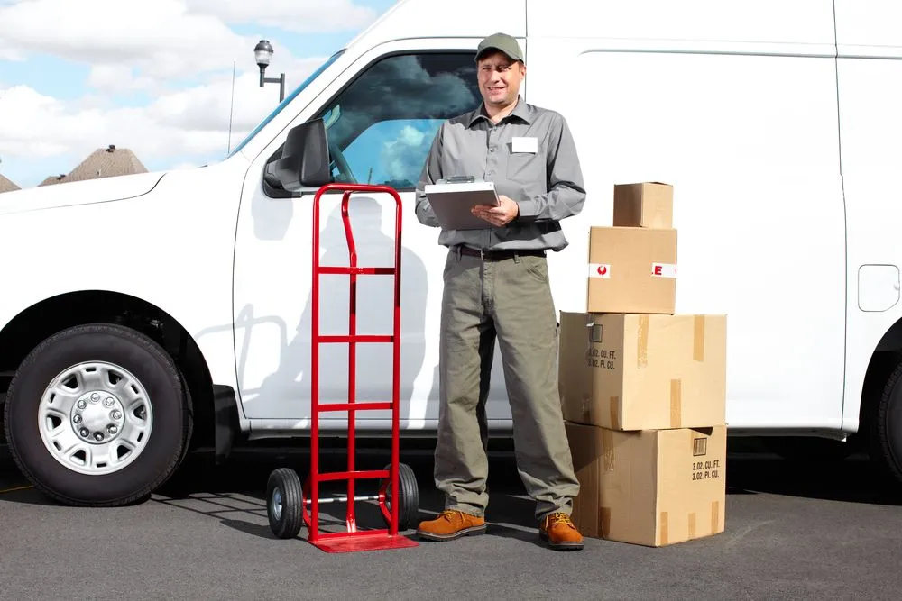

اساليب تغليف الزجاج للنقل بالرياض

يعتبر تغليف الزجاج للنقل هو خطوة أساسية ومهمة للغاية، وذلك لضمان وصول الأثاث الزجاجي بحالة ممتازة إلى البيت الجديد، وهذا يتم من خلال استخدام مواد تغليف عالية الجودة مثل الفوم، البلاستيك المقوى، والورق المقوى، بهذه الطريقة يمكننا حماية الزجاج من أي خدوش أو كسور أثناء عملية النقل، وكل هذا يحتاج إلى شركة نقل عفش متخصصة في نقل جميع أنواع الأثاث الزجاجي مثل، مرايا، نوافذ، أو طاولات زجاجية، فإن عملية التغليف الصحيحة تضمن الحفاظ على سلامة الزجاج طوال الطريق، بفضل خبرتنا في هذا المجال، نقدم لك حلاً آمنًا وفعّالًا يضمن لك راحة البال.
تغليف الزجاج للنقل
عند تغليف الزجاج للنقل هذا يتطلب اهتمامًا خاصًا لضمان حمايته من أي أضرار قد يحدث أثناء، وبما أن الزجاج يعد من المواد الحساسة والهشة، فإن عملية التغليف تتكون من عدة خطوات حيث تبدأ باستخدام ورق الفقاعة الذي يلف حول القطع الزجاجية بشكل دقيق، ويتم إضافة الفوم الرغوي أو البلاستيك المقوى كطبقات إضافية لحماية الزجاج من الخدوش أو الصدمات، بالإضافة إلى ورق مقوى لتثبيت الأجزاء وحمايتها من الضغط، تعتبر كل هذه المواد توفر طبقات حماية متعددة تحافظ على الزجاج طوال عملية النقل.
كما يتم استخدام شريط لاصق قوي أيضًا لتثبيت المواد الواقية وضمان عدم تحرك الزجاج أثناء النقل، في حالات النقل
لمسافات طويلة أو في الشاحنات الكبيرة، يتم تثبيت الأثاث الزجاجي داخل الشاحنة باستخدام وسائل تثبيت إضافية لتقليل
الحركة، بالإضافة إلى أنه يفضل استخدام شاحنات مجهزة خصيصًا لنقل الأثاث الزجاجي لتوفير المزيد من الأمان والاستقرار
بهذه الطريقة، نضمن أن يصل الأثاث الزجاجي إلى وجهته بأمان ودون أي أضرار.
ورق تغليف الزجاج
يعد ورق تغليف الزجاج للنقل من العناصر الأساسية لضمان حماية الأثاث الزجاجي أثناء النقل، نظرًا لأنه من المواد الهشة، فهو عرضة للكسر أو الخدوش بسهولة إذا لم يتم التعامل معه بشكل صحيح، لذلك يتم استخدام ورق الفقاعة بشكل رئيسي في تغليف الزجاج، حيث يتم لفه حول القطع الزجاجية بشكل دقيق، كما أن ورق الفقاعة يتميز بوجود فقاعات هوائية تخلق طبقة عازلة تحمي الزجاج من الصدمات والأضرار الخارجية مثل الخدوش أو التجريحات، مما يضمن حماية فعالة خلال عملية النقل.
إلى جانب ورق الفقاعة، يتم استخدام البلاستيك المقوى لتوفير طبقة حماية إضافية للزجاج، حيث يعد البلاستيك المقوى من أكثر الخطوات المهمة فهو يساعد في حماية القطع الزجاجية من العوامل البيئية مثل الرطوبة والأتربة، كما يمنع أي تأثيرات خارجية قد تضر بالزجاج، كما أنه عمل كحاجز ضد أي ضغط أو تأثيرات قد تحدث أثناء النقل،ويتم استخدام البلاستيك المقوى لتثبيت الزجاج داخل الشاحنات، مما يقلل من حركة القطع الزجاجية ويحميها من التصادم مع باقي الأثاث.
شركات نقل زجاج
إذا كنت تريد التعامل مع أفضل شركات تغليف الزجاج للنقل، والتي تتميز بتقديم خدمات عالية الجودة ومتخصصة لضمان سلامة الأثاث الزجاجي أثناء النقل، ستجد أن شركة نقل الرياض واحدة من أبرز هذه الشركات، فـ هي تقدم خدمات نقل الزجاج ونقل العفش أيضًا بشكل احترافي وآمن، بالإضافة إلى تغليفًا عالي الجودة باستخدام مواد مثل ورق الفقاعة والبلاستيك المقوى، بالإضافة إلى تأمين الأثاث أثناء النقل، كما توفر شاحنات مجهزة لنقل الزجاج بشكل مستقر وآمن، مما يقلل من أي خطر قد يهدد الأثاث الزجاجي أثناء الطريق، بفضل فريق عمل مدرب وذو خبرة تضمن الشركة أن الزجاج يصل إلى وجهته بأمان تام، سواء كان النقل لمسافات قصيرة أو طويلة، شركة نقل الرياض تعتبر الاختيار الأمثل لمن يبحث عن جودة الخدمة واهتمام بأدق التفاصيل أثناء نقل الزجاج.
طريقة تغليف الصحون للنقل
تغليف الصحون للنقل يتطلب دقة وعناية خاصة لضمان عدم كسرها أو تلفها أثناء العملية. إليك الطريقة المثلى لتغليف الصحون:
1- استخدام ورق الفقاعة: نقوم بتغطية كل صحن بورق فقاعة لتوفير حماية إضافية ضد الصدمات، حيث أن لف كل صحن بشكل فردي في ورق الفقاعة حتى يغطّي كامل سطحه.
2- تكديس الصحون بشكل منفصل: إذا كنت تحتاج لتكديس الصحون، تأكد من وضع ورق فقاعة أو ورق تغليف بين كل صحن وآخر لامتصاص الصدمات وتقليل الضغط.
3- استخدام ورق الكرافت أو ورق التغليف: بعد تغليف الصحون بورق الفقاعة، يمكنك لفها في ورق كرافت أو ورق تغليف لتوفير طبقة أمان إضافية وحمايتها من الأتربة والخدوش.
4- الصناديق المخصصة: ضع الصحون المغلفة في صناديق متينة ومخصصة لنقل الصحون والأطباق، تأكد من أن الصندوق ليس كبيرًا جدًا، لأن الصحون قد تتحرك داخل الصندوق، مما يزيد من خطر التلف.
5- تثبيت الصحون في الصندوق: لزيادة الأمان، ضع قطع من ورق الفقاعة أو قطع من الفوم في قاع الصندوق وعلى جوانب الصحون بعد وضعها، مما يساعد في تثبيت الصحون بشكل آمن ومنعها من التحرك.
6- وضع العلامات: ضع علامة “قابل للكسر” على الصندوق لتحديد محتوياته وتنبيه الفريق الناقل للتعامل بحذر.
الأسئلة الشائعة حول شركة تغليف الزجاج للنقل
ما هي المواد المستخدمة لتغليف الزجاج أثناء النقل؟
لتغليف الزجاج أثناء النقل، يتم استخدام مجموعة من المواد التي تضمن حمايته من الخدوش والتلف أو الكسر، وتشمل:
- الفوم الرغوي: يستخدم لتغطية الزجاج بالكامل ويوفر طبقة حماية مرنة من الصدمات.
- ورق الفقاعة : يغلف الزجاج بشكل محكم ويعمل كعازل فعال ضد الصدمات، مما يحميه من التلف.
- البلاستيك المقوى: يستخدم لتغطية الزجاج وحمايته من الأتربة والرطوبة، بالإضافة إلى تقديم حماية إضافية ضد الحواف الحادة.
- ورق مقوى: يتم وضعه حول الزجاج لتوفير طبقة صلبة تعزز الحماية ضد أي تأثيرات خارجية.
- شريط لاصق قوي: يتم استخدامه لتثبيت المواد الواقية على الزجاج ومنعه من التحرك أثناء النقل.
هل يمكنني الحصول على تأمين على الأثاث الزجاجي أثناء النقل؟
يمكنك الحصول على تأمين على الأثاث الزجاجي أثناء النقل، حيث أن تأمين الأثاث الزجاجي يضمن حماية القطع الزجاجية من أي أضرار قد تحدث أثناء عملية النقل، سواء كانت نتيجة للصدمات أو الحوادث غير المتوقعة، تقدم شركتنا خيارات تأمين شاملة للأثاث الزجاجي لضمان راحة بالك أثناء النقل، مع تعويضك في حالة حدوث أي تلف أو كسر، كما يتم تفعيل التأمين بشكل تلقائي مع خدمات النقل، ويمكنك اختيار تغطيته وفقًا لقيمة الأثاث الزجاجي المنقول.
هل توفر شركتكم خدمة نقل الزجاج في أوقات الطوارئ؟
نعم شركتنا توفر خدمة نقل الزجاج في أوقات الطوارئ. نحن نفهم أن بعض المواقف تتطلب سرعة في النقل، ولذلك نحرص على تقديم خدمات النقل في حالات الطوارئ بأعلى درجة من الاحترافية والسرعة، سواء كنت بحاجة لنقل الزجاج بشكل عاجل بسبب التغيير المفاجئ أو أي حالة طارئة أخرى، لدينا فريق مدرب جاهز لتقديم المساعدة الفورية مع ضمان الحفاظ على سلامة الأثاث الزجاجي طوال العملية.
كم من الوقت يستغرق تغليف الزجاج بشكل آمن قبل نقله؟
مدة تغليف الزجاج بشكل آمن قبل نقله تعتمد على حجم وعدد القطع الزجاجية، ولكن في المتوسط، يمكن أن يستغرق تغليف الزجاج بشكل آمن من 30 دقيقة إلى ساعة لكل قطعة، حيث يشمل ذلك استخدام المواد المناسبة مثل الفوم، ورق الفقاعة، والبلاستيك المقوى لضمان حماية الزجاج من أي خدوش أو كسر أثناء النقل، بالنسبة للقطع الكبيرة أو الهشة، قد يستغرق التغليف وقتًا أطول لضمان تغليفها بشكل محكم وآمن.
في النهاية يعد تغليف الزجاج للنقل ليس مجرد خطوة، بل هو أساس لضمان وصول الأثاث بأمان، وهو يتم من خلال الخبرة والاهتمام بكل التفاصيل، نحرص على استخدام أحدث تقنيات التغليف لتوفير أقصى درجات الحماية قطع الزجاج، فإن خدماتنا تتضمن التغليف المتقن، النقل الآمن، والتعامل بعناية مع كل قطعة زجاجية، لضمان تجربة نقل خالية من المخاطر.